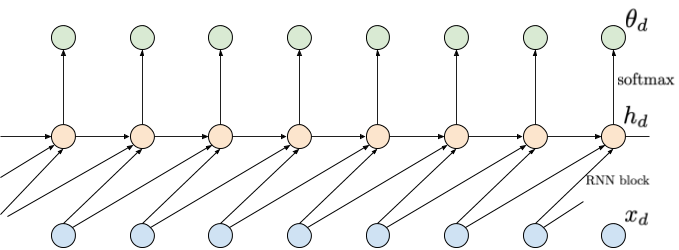
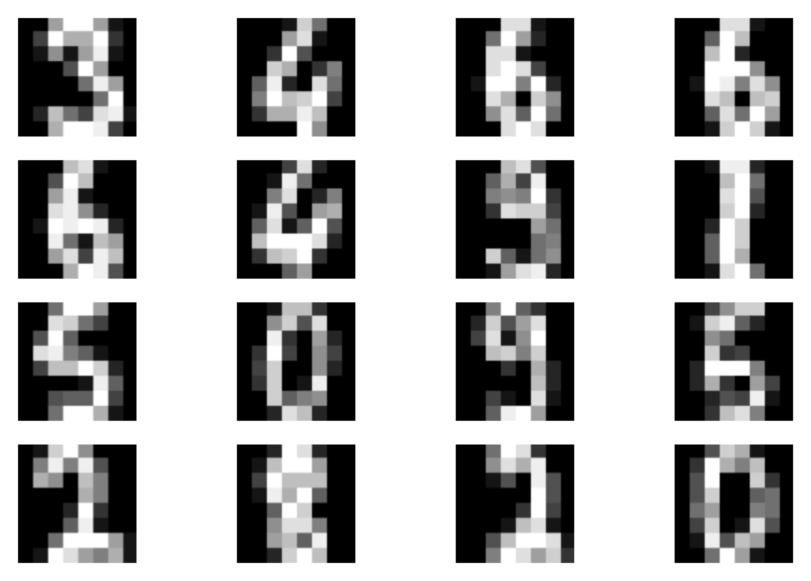
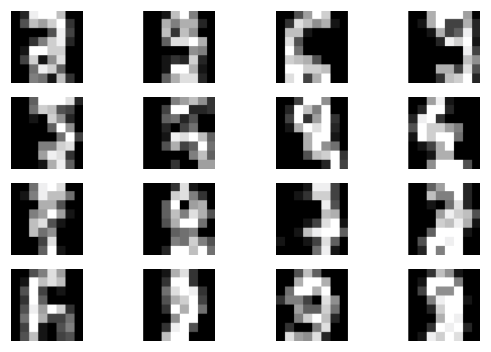
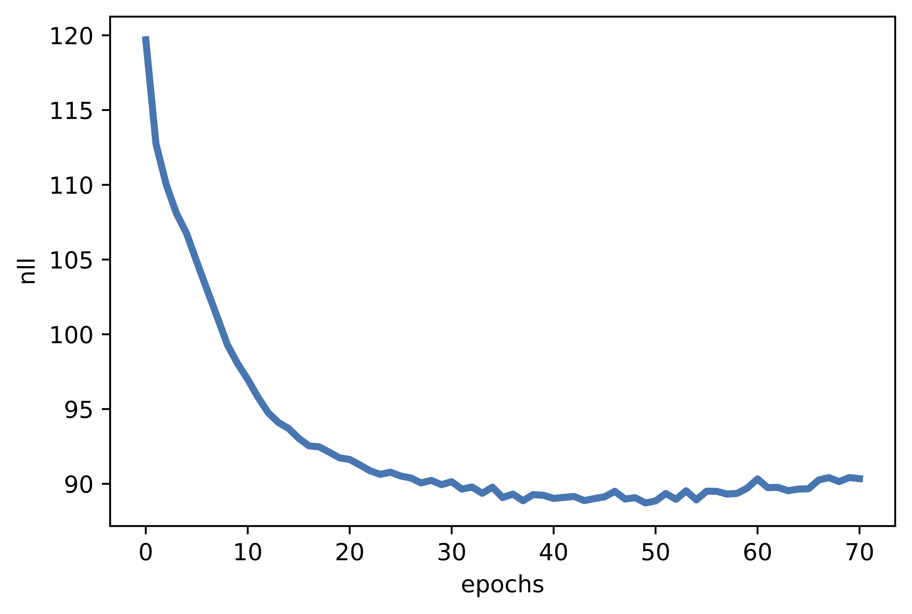
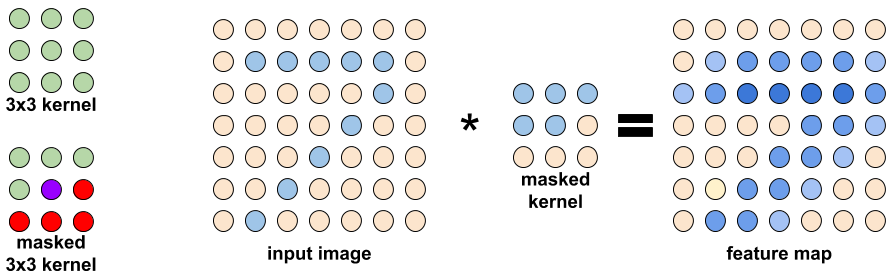
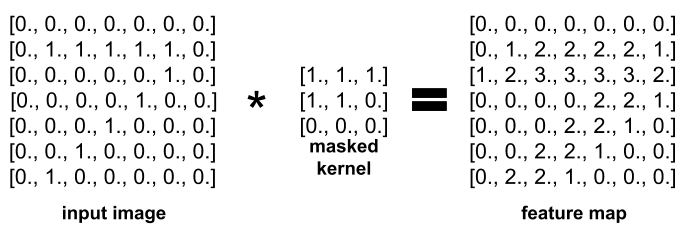

Deep Autoregressive Models¶
Introduction¶
Before we start discussing how we can model the distribution $p(\mathbf{x})$, we refresh our memory about the core rules of probability theory, namely, the sum rule and the product rule. Let us introduce two random variables $\mathbf{x}$ and $\mathbf{y}$. Their joint distribution is $p(\mathbf{x}, \mathbf{y})$. The product rule allows us to factorize the joint distribution in two manners, namely:
\begin{align*} p(\mathbf{x}, \mathbf{y}) &= p(\mathbf{x} | \mathbf{y}) p(\mathbf{y}) \\ &= p(\mathbf{y} | \mathbf{x}) p(\mathbf{x}) . \end{align*}In other words, the joint distribution could be represented as a product of a marginal distribution and a conditional distribution. The sum rule tells us that if we want to calculate the marginal distribution over one of the variables, we must integrate out (or sum out) the other variable, that is:
$$ p(\mathbf{x}) = \sum_{\mathbf{y}} p(\mathbf{x}, \mathbf{y}). $$These two rules will play a crucial role in formulating deep generative models.
Now, let us consider a high-dimensional random variable $\mathbf{x} \in \mathcal{X}^{D}$ where $\mathcal{X} = \{0,1,\dots , 255\}$ or $\mathcal{X} = \mathbb{R}$. Our goal is to model $p(\mathbf{x})$. Before we jump into thinking of specific parameterization, let's first apply the product rule to express the joint distribution in a different manner:
$$ p(\mathbf{x}) = p(x_1) \prod_{d=2}^{D} p(x_{d}|\mathbf{x}_{<d}) , $$where $\mathbf{x}_{<d} = [x_1, x_2, \ldots , x_{d-1}]^{\top}$. For instance, for $\mathbf{x} = [x_1, x_2, x_{3}]^{\top}$, we have $p(\mathbf{x}) = p(x_1) p(x_{2}|x_{1}) p(x_{3} | x_{1}, x_{2})$.
As we can see, the product rule applied multiple times to the joint distribution provides a principled manner of factorizing the joint distribution into many conditional distributions. That's great news! However, modelling all conditional distributions $p(x_{d}|\mathbf{x}_{<d})$ separately is simply infeasible! If we did that, we would obtain $D$ separate models, and the complexity of each model would grow due to varying conditioning. A natural question is whether we can do better, and the answer is yes.
Autoregressive models parameterized by neural networks¶
As mentioned earlier, we aim to model the joint distribution $p(\mathbf{x})$ using conditional distributions. However, we will make additional assumptions to use a shared model for these conditional distributions. As a result, we will end up with an autoregressive model (ARM). Next, we outline ARMs parameterized with various neural networks.
Finite memory The first attempt to limiting the complexity of a conditional model is to assume a finite memory. For instance, we can assume that each variable is dependent on max. two other variables, namely:
$$ p(\mathbf{x}) = p(x_1) p(x_2|x_1) \prod_{d=3}^{D} p(x_{d}|x_{d-1}, x_{d-2}) . $$Then, we can use a small neural network, e.g., Multi-layered Perceprons (MLP), to predict the distribution of $x_{d}$. If $\mathcal{X} = \{0, 1, \ldots, 255\}$, the MLP takes $x_{d-1}, x_{d-2}$ and outputs probabilities for the categorical distribution of $x_{d}$, $\theta_{d}$. The $\mathrm{MLP}$ could be of the following form:
$$ [x_{d-1}, x_{d-2}] \rightarrow \mathrm{Linear}(2,M) \rightarrow \mathrm{ReLU} \rightarrow \mathrm{Linear}(M, 256) \rightarrow \mathrm{softmax} \rightarrow \theta_{d} $$where $M$ denotes the number of hidden units, e.g., $M=300$. An example of this approach is depicted in Figure 1.
Figure 1. An example of applying a shared MLP depending on two last inputs. Inputs are denoted by blue nodes (bottom), intermediate representations are denoted by orange nodes (middle), and output probabilities are denoted by green nodes (top). Notice that a probability $\theta_d$ is not dependent on $x_d$.
It is important to notice that now we use a single, shared $\mathrm{MLP}$ to predict probabilities for $x_{d}$. Such a model is not only non-linear but also its parameterization is convenient due to a relatively small number of weights to be trained. However, the obvious drawback is a limited memory. Moreover, it is unclear a priori how many variables we should use in conditioning. In many problems, e.g., image processing, learning long-range statistics is crucial to understand complex patterns in data, therefore, having long-range memory is crucial.
Long-range memory through RNNs A possible solution to the problem of a short-range memory relies on applying a recurrent neural network ($\mathrm{RNN}$) (Chung et al., 2014; Hochreiter & Schmidhuber, 1997). In other words, we can model the conditional distributions as follows (Sutskever et al., 2011):
$$ p(x_d|\mathbf{x}_{<d}) = p\left(x_d|\mathrm{RNN}(x_{d-1}, h_{d-1})\right) $$where $h_d = \mathrm{RNN}(x_{d-1}, h_{d-1})$, and $h_d$ is a hidden context that acts as a memory that allows learning long-range dependencies. An example of using an RNN is presented in Figure 2.

Figure 2. An example of applying an RNN depending on two last inputs. Inputs are denoted by blue nodes (bottom), intermediate representations are denoted by orange nodes (middle), and output probabilities are denoted by green nodes (top). Notice that compared to the approach with a shared MLP, there is an additional dependency between intermediate nodes $h_d$.
This approach gives a single parameterization, thus, it is efficient, and also solves the problem of a finite memory. Unfortunately, $\mathrm{RNN}$s suffer from other issues, namely: (i) they are sequential, hence, slow, (ii) if they are badly conditioned (i.e., the eigenvalues of a weight matrix are larger or smaller than $1$, then they suffer from exploding or vanishing gradients, respectively, that hinders learning long-range dependencies.
Long-range memory through Convolutional Nets In (Collobert & Weston, 2008; Kalchbrenner et al., 2014) it was noticed that convolutional neural networks (CNNs) could be used instead of RNNs to model long-range dependencies. To be more precise, one-dimensional convolutional layers (Conv1D) could be stacked together to process sequential data. The advantages of such an approach are the following: (i) kernels are shared (i.e., an efficient parameterization), and (ii) the processing is done in parallel that greatly speeds up computations. Moreover, by stacking more layers, the effective kernel size grows with the network depth.
A Conv1D can be applied to calculate embeddings like in (Kalchbrenner et al., 2014), but it cannot be used for autoregressive models. Why? Because we need convolutions to be causal (Bai et al., 2018). Causal in this context means that a Conv1D layer is dependent on the last $k$ inputs but the current one (option A) or with the current one (option B). Option A is required in the first layer because the final output (i.e., the probabilities $\theta_d$) cannot be dependent on $x_d$. Additionally, if we want to increase the effective kernel size, we can use dilation larger than 1.
In Figure 3 we present an example of a neural network consisting of 3 causal Conv1D layers. The first CausalConv1D is of type A, i.e., it does not take into account only the last $k$ inputs without the current one. Then, in the next two layers, we use CausalConv1D (option B) with dilation 2 and 3. Typically, the dilation values are 1, 2, 4, 8 (v.d. Oord et al., 2016a), however, taking 2 and 4 would not nicely fit in a figure. We highlight in red all connections that go from the output layer to the input layer. As we can notice, stacking CausalConv1D layers with the dilation larger than 1 allows us to learn long-range dependencies (in this example, by looking at 7 last inputs).

Figure 3. An example of applying causal convolutions. The kernel size is 2, but by applying dilation in higher layers, a much larger input could be processed (red edges), thus, a larger memory is utilized. Notice that the first layers must be option A to ensure proper processing.
The CausalConv1D layers are better-suited to modeling sequential data than RNNs. They obtain not only better results (e.g., classification accuracy), but also allow learning long-range dependencies better than RNNs (Bai et al., 2018). Moreover, they do not suffer from exploding/vanishing gradient issues. As a result, they seem to be a perfect parameterization for autoregressive models! Their supremacy has been proven in many cases, including audio processing by WaveNet, a neural network consisting of CausalConv1D layers (v.d. Oord et al., 2016a), or image processing by PixelCNN, a model with CausalConv2D components (v.d. Oord et al., 2016b).
Then, is there any drawback of applying autoregressive models parameterized by causal convolutions? Unfortunately, yes, there is and it is connected with sampling. If we want to evaluate probabilities for given inputs, we need to calculate the forward pass where all calculations are done in parallel. However, if we want to sample new objects, we must iterate through all positions (think of a big for-loop, from the first variable to the last one), and iteratively predict probabilities and sample new values. Since we use convolutions to parameterize the model, we must do $D$ full forward passes to get the final sample. That's a big waste, but, unfortunately, that's the price we must pay for all "goodies" following from the convolutional-based parameterization of the ARM. Fortunately, there is on-going research on speeding up computations, e.g., see (Wiggers & Hoogeboom, 2020).
Deep Generative Autoregressive Model in action!¶
Alright, let us talk more about details and how to implement an ARM. First, we focus on images, e.g., $\mathbf{x} \in \{0, 1, \ldots, 15\}^{64}$. Since images are represented by integers, we will use the categorical distribution to represent them (in one of future blogpost, we will comment on the choice of distribution for images in more detail). We model $p(\mathbf{x})$ using an ARM parameterized by CausalConv1D layers. As a result, each conditional is the following:
\begin{align} p(x_{d} | \mathbf{x}_{<d}) &= \mathrm{Categorical}\left(x_{d}|\theta_{d}\left(\mathbf{x}_{<d}\right)\right) \\ &= \prod_{l=1}^{L} \left( \theta_{d,l} \right)^{[x_{d} = l]} \end{align}where $[a = b]$ is the Iverson bracket (i.e., $[a = b] = 1$ if $a = b$, and $[a = b] = 0$ if $a \neq b$), $\theta_d\left(\mathbf{x}_{<d}\right) \in [0,1]^{16}$ is the output of the CausalConv1D-based neural network with the softmax in the last layer, so $\sum_{l=1}^{L} \theta_{d,l} = 1$. To be very clear, the last layer must have $16$ output channels (because there are 16 possible values per pixel), and the softmax is take over these $16$ values. We stack CausalConv1D layers with non-linear activation functions in between (e.g., LeakyRELU). Of course, we must remember about taking the option A CausalConv1D as the first layer! Otherwise we break the assumption about taking into account $x_d$ in predicting $\theta_d$.
What about the objective function? ARMs are the likelihood-based models, so for given $N$ i.i.d. datapoints $\mathcal{D} = \{\mathbf{x}_{1}, \ldots , \mathbf{x}_{N}\}$, we aim at maximizing the logarithm of the likelihood function, that is (we will use the product and sum rules again):
\begin{align} \ln p(\mathcal{D}) &= \ln \prod_{n} p(\mathbf{x}_{n}) \\ &= \sum_{n} \ln p(\mathbf{x}_{n}) \\ &= \sum_{n} \ln \prod_{d} p(x_{n,d}|\mathbf{x}_{n,<d}) \\ &= \sum_{n} \left( \sum_{d} \ln p(x_{n,d}|\mathbf{x}_{n,<d}) \right) \\ &= \sum_{n} \left( \sum_{d} \ln \mathrm{Categorical}\left(x_{d}|\theta_{d}\left(\mathbf{x}_{<d}\right)\right) \right) \\ &= \sum_{n} \left( \sum_{d} \left(\sum_{l=1}^{L} {[x_{d} = l]} \ln \theta_{d}\left(\mathbf{x}_{<d}\right) \right) \right) \end{align}For simplicity, we assumed that $\mathbf{x}_{<1} = \emptyset$, i.e., no conditioning. As we can notice, the objective function takes a very nice form! First, the logarithm over the i.i.d. data $\mathcal{D}$ results in a sum over data points of the logarithm of individual distributions $p(\mathbf{x}_{n})$. Second, applying the product rule, together with the logarithm, results in another sum, this time over dimensions. Eventually, by parameterizing the conditionals by CausalConv1D, we can calculate all $\theta_d$ in one forward pass, and then see check the pixel value (see the last line of $\ln p(\mathcal{D})$). Ideally, we want $\theta_{d,l}$ to be as close to $1$ if $x_d = l$.
Uff... Alright, let's take a look at some code. Remember, we need to define CausalConv1D first, and then we can use it to build our own ARM! The full code is available under the following [link]. Here, we focus only on the code for the model. We provide details in the comments.
class CausalConv1d(nn.Module):
"""
A causal 1D convolution.
"""
def __init__(self, in_channels, out_channels, kernel_size, dilation, A=False, **kwargs):
super(CausalConv1d, self).__init__()
# The general idea is the following: We take the build-in PyTorch Conv1D.
# Then, we must pick a proper padding, because we must ensure the convolutional is causal.
# Eventually, we must remove some final elements of the output, because we simply don't need them!
# Since CausalConv1D is still a convolution, we must define the kernel size, dilation and whether it is
# option A (A=True) or option B (A=False). Remember that by playing with dilation we can enlarge
# the size of the memory.
# attributes:
self.kernel_size = kernel_size
self.dilation = dilation
self.A = A
self.padding = (kernel_size - 1) * dilation + A * 1
# module:
self.conv1d = torch.nn.Conv1d(in_channels, out_channels,
kernel_size, stride=1,
padding=0, #notice we will do padding by ourself in the forward pass!
dilation=dilation,
**kwargs)
def forward(self, x):
# We do padding only from the left! This is more efficient implementation.
x = torch.nn.functional.pad(x, (self.padding, 0))
conv1d_out = self.conv1d(x)
if self.A:
# Remember, we cannot be dependent on the current component, therefore, the last element is removed.
return conv1d_out[:, :, : -1]
else:
return conv1d_out
class ARM(nn.Module):
def __init__(self, net, D=2, num_vals=256):
super(ARM, self).__init__()
# Remember, always credit the author, even if it's you ;)
print('ARM by JT.')
# This is a definition of a network. See the next cell.
self.net = net
# This is how many values a pixel can take.
self.num_vals = num_vals
# This is the problem dimentionality (the number of pixels)
self.D = D
# This function calculates the arm output.
def f(self, x):
# First, we apply causal convolutions.
h = self.net(x.unsqueeze(1))
# In channels, we have the number of values. Therefore, we change the order of dims.
h = h.permute(0, 2, 1)
# We apply softmax to calculate probabilities.
p = torch.softmax(h, 2)
return p
# The forward pass calculates the log-probability of an image.
def forward(self, x, reduction='avg'):
if reduction == 'avg':
return -(self.log_prob(x).mean())
elif reduction == 'sum':
return -(self.log_prob(x).sum())
else:
raise ValueError('reduction could be either `avg` or `sum`.')
# This function calculates the log-probability (log-categorical).
# See the full code in the separate file for details.
def log_prob(self, x):
mu_d = self.f(x)
log_p = log_categorical(x, mu_d, num_classes=self.num_vals, reduction='sum', dim=-1).sum(-1)
return log_p
# This function implements sampling procedure.
def sample(self, batch_size):
# As you can notice, we first initilize a tensor with zeros.
x_new = torch.zeros((batch_size, self.D))
# Then, iteratively, we sample a value for a pixel.
for d in range(self.D):
p = self.f(x_new)
x_new_d = torch.multinomial(p[:, d, :], num_samples=1)
x_new[:, d] = x_new_d[:,0]
return x_new
# An exemple of a network. NOTICE: The first layer is A=True, while all the other are A=False.
# At this point we should know already why :)
M = 256
net = nn.Sequential(
CausalConv1d(in_channels=1, out_channels=MM, dilation=1, kernel_size=kernel, A=True, bias=True),
nn.LeakyReLU(),
CausalConv1d(in_channels=MM, out_channels=MM, dilation=1, kernel_size=kernel, A=False, bias=True),
nn.LeakyReLU(),
CausalConv1d(in_channels=MM, out_channels=MM, dilation=1, kernel_size=kernel, A=False, bias=True),
nn.LeakyReLU(),
CausalConv1d(in_channels=MM, out_channels=num_vals, dilation=1, kernel_size=kernel, A=False, bias=True))
Perfect! Nowe we are ready to run the full code (take a look at: [link]). After training our ARM, we should obtain results similar to the following:
A  B  C  Figure 3. Examples of outcomes of the training: A Randomly selected real images. B Unconditional generations from the ARM. C The validation curve during training.
Is it all? No!¶
First of all, we discussed one-dimensional causal convolutions that are typically insufficient for modeling images due to their spatial dependencies in 2D (or 3D if we consider more than 1 channel; for simplicity, we focus on a 2D case). In (v.d. Oord et al., 2016b), a CausalConv2D was proposed. The idea is similar to that discussed so far but now we need to ensure that the kernel will not look into future pixels in both the x-axis and y-axis. In Figure 4, we present the difference between a standard kernel where all kernel weights are used and a masked kernel with some weights zeroed-out (or masked). Notice that in CausalConv2D we must also use option A for the first layer (i.e., we skip the pixel in the middle) and we can pick option B for the remaining layers.

Figure 4. An example of a masked 3x3 kernel (i.e., a causal 2D kernel): (left) A difference between a standard kernel (all weights are used; denoted by green), and a masked kernel (some weights are masked, i.e., not used; in red). For the masked kernel, we denoted the node (pixel) in the middle in violet, because it is either masked (option A) or not (option B). (middle) An example of an image (light orange nodes: zeros, light blue nodes: ones) and a masked kernel (option A). (right) The result of applying the masked kernel to the image (with padding equal 1).
In Figure 5, we present the same example as in Figure 4 but using numeric values.

Figure 5. The same example as in Figure 4 but with numeric values.
In (v.d. Oord et al., 2016c), the authors proposed a further improvement on the causal convolutions. The main idea relies on creating a block that consits of vertical and horizontal convolutional layers. Moreover, they used gated non-linearity function, namely, $\mathbf{h} = \mathrm{tanh}(\mathbf{W}\mathbf{x}) \odot \sigma(\mathbf{V}\mathbf{x}) $. See Figure 2 in (v.d. Oord et al., 2016c) for details.
Another very important paper is (Salimans et al., 2017). Therein, the authors proposed to replace the categorical distribution used for modeling pixel values with a discretized logistic. Moreover, they suggested to use a mixture of discretize logistic distributions to further increase flexibility of their ARM.
The introduction of the causal convolution opened multiple opportunities for deep generative modeling and allowed obtaining state-of-the-art generations and density estimations. It is impossible to review all papers here, we just name a few interesting directions/applications that are worth remembering:
- ARMs could be used as stand-alone models or they can be used in a combination with other approaches. For instance, they can be used for modeling a prior in the (Variational) Auto-Encoders (Habibian et al., 2019).
- A possible drawback of ARMs is a lack of latent representation because all conditionals are modeled explicitly from data. To overcome this issue, (Gulrajani et al., 2016) proposed to use a PixelCNN-based decoder in a Variational Auto-Encoder.
- An interesting and important research direction is about proposing new architectures/components of ARMs or speeding them up. As mentioned earlier, sampling from ARMs could be slow but there are ideas to improve on that by predictive sampling (Wiggers & Hoogeboom, 2020).
References¶
(Bai et al., 2018) Bai, S., Kolter, J. Z., & Koltun, V. (2018). An empirical evaluation of generic convolutional and recurrent networks for sequence modeling. arXiv preprint arXiv:1803.01271.
(Chung et al., 2014) Chung, J., Gulcehre, C., Cho, K., & Bengio, Y. (2014). Empirical evaluation of gated recurrent neural networks on sequence modeling. arXiv preprint arXiv:1412.3555.
(Collobert & Weston, 2008) Collobert, R., & Weston, J. (2008, July). A unified architecture for natural language processing: Deep neural networks with multitask learning. International Conference on Machine learning, 160-167.
(Gulrajani et al., 2016) Gulrajani, I., Kumar, K., Ahmed, F., Taiga, A. A., Visin, F., Vazquez, D., & Courville, A. (2016). Pixelvae: A latent variable model for natural images. arXiv preprint arXiv:1611.05013.
(Habibian et al., 2019) Habibian, A., Rozendaal, T. V., Tomczak, J. M., & Cohen, T. S. (2019). Video compression with rate-distortion autoencoders. In Proceedings of the IEEE International Conference on Computer Vision (pp. 7033-7042).
(Hochreiter & Schmidhuber, 1997) Hochreiter, S., & Schmidhuber, J. (1997). Long short-term memory. Neural computation, 9(8), 1735-1780.
(Kalchbrenner et al., 2014) Kalchbrenner, N., Grefenstette, E., & Blunsom, P. (2014). A Convolutional Neural Network for Modelling Sentences. In Proceedings of the 52nd Annual Meeting of the Association for Computational Linguistics, 655-665.
(Salimans et al., 2017) Salimans, T., Karpathy, A., Chen, X., & Kingma, D. P. (2017). Pixelcnn++: Improving the pixelcnn with discretized logistic mixture likelihood and other modifications. arXiv preprint arXiv:1701.05517.
(Sitzmann et al., 2020) Sitzmann, V., Martel, J., Bergman, A., Lindell, D., & Wetzstein, G. (2020). Implicit neural representations with periodic activation functions. Advances in Neural Information Processing Systems, 33.
(Sutskever et al., 2011) Sutskever, I., Martens, J., & Hinton, G. (2011). Generating text with recurrent neural networks. International Conference on Machine Learning, pp. 1017-1024.
(v.d. Oord et al., 2016a) van den Oord, Aaron, Sander Dieleman, Heiga Zen, Karen Simonyan, Oriol Vinyals, Alex Graves, Nal Kalchbrenner, Andrew Senior, and Koray Kavukcuoglu. "Wavenet: A generative model for raw audio." arXiv preprint arXiv:1609.03499 (2016).
(v.d. Oord et al., 2016b) van Den Oord, Aaron, Nal Kalchbrenner, and Koray Kavukcuoglu. "Pixel recurrent neural networks." In Proceedings of the 33rd International Conference on International Conference on Machine Learning-Volume 48, pp. 1747-1756. (2016).
(v.d. Oord et al., 2016c) Van den Oord, A., Kalchbrenner, N., Espeholt, L., Vinyals, O., & Graves, A. (2016). Conditional image generation with pixelcnn decoders. Advances in neural information processing systems, 29, 4790-4798.
(Wiggers & Hoogeboom, 2020) Wiggers, A. J., & Hoogeboom, E. (2020). Predictive Sampling with Forecasting Autoregressive Models. arXiv preprint arXiv:2002.09928.